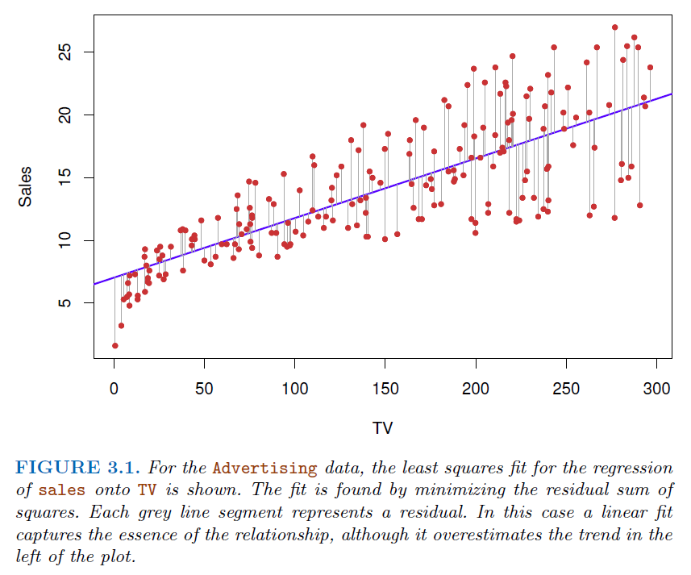
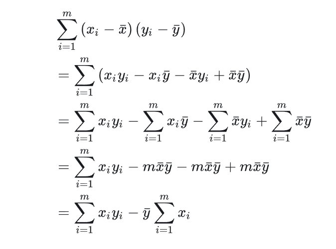
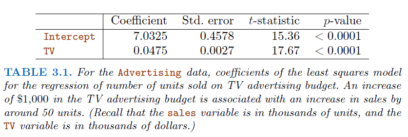
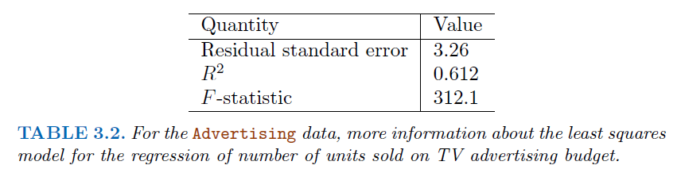
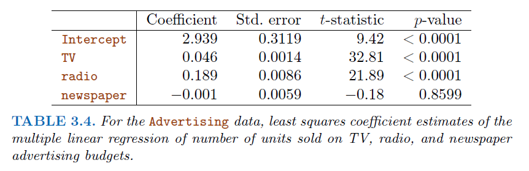
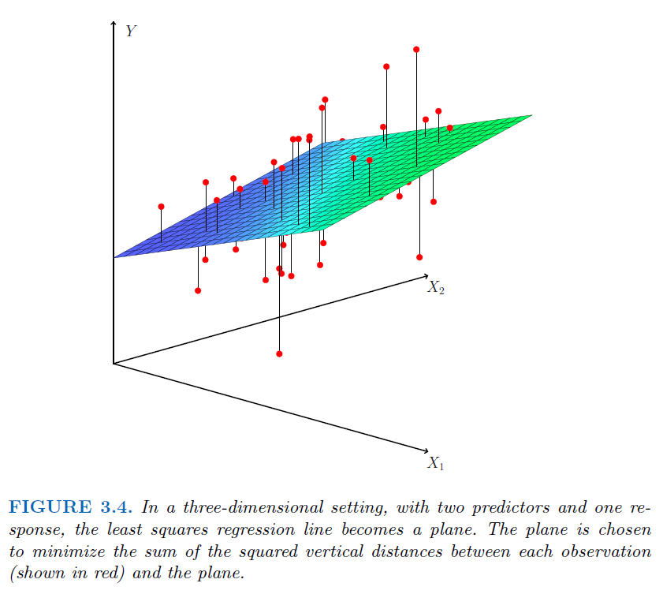
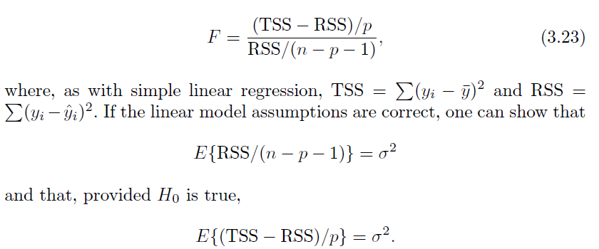
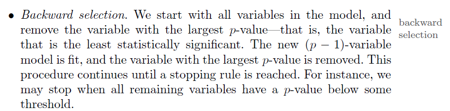
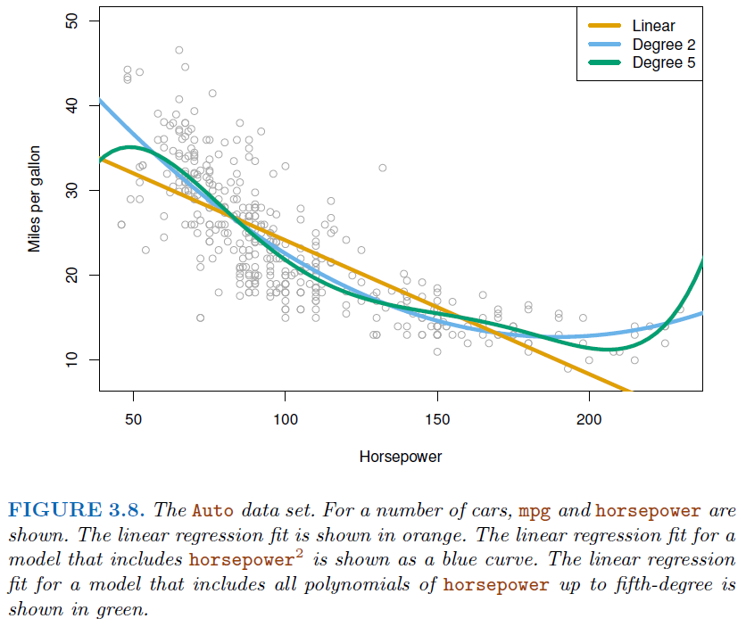
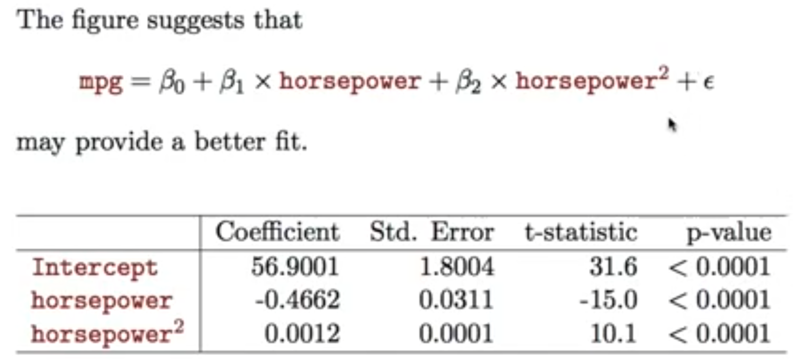

2. Regression#
2.1. Simple Linear Regression#
\(Y=\beta_0+\beta_1 x + e\)
\(Y\) represents the dependent variable or the variable we are trying to predict or explain.
\(x\) represents the independent variable or the predictor variable.
\(\beta_0\) is the intercept of the regression line, which is the predicted value of \(Y\) when \(x\) is zero.
\(\beta_1\) is the slope of the regression line, representing the average change in \(Y\) for a one-unit change in \(x\).
\(e\) stands for the error term (also known as the residual), which is the difference between the observed values and the values predicted by the model.

# Import necessary libraries
import numpy as np
from sklearn.linear_model import LinearRegression
import matplotlib.pyplot as plt
# Generate some random data for demonstration
np.random.seed(0) # Seed for reproducibility
x = np.random.rand(100, 1) # 100 random numbers for independent variable
y = 2 + 3 * x + np.random.randn(100, 1) # Dependent variable with some noise
# Create a linear regression model
model = LinearRegression()
# Fit the model with our data (x - independent, y - dependent)
model.fit(x, y)
# Print the coefficients
print("Intercept (beta_0):", model.intercept_)
print("Slope (beta_1):", model.coef_)
Intercept (beta_0): [2.22215108]
Slope (beta_1): [[2.93693502]]
# Use the model to make predictions
y_pred = model.predict(x)
# Plotting
plt.scatter(x, y, color='blue') # actual data points
plt.plot(x, y_pred, color='red') # our model's predictions
plt.title('Simple Linear Regression')
plt.xlabel('x')
plt.ylabel('y')
plt.show()
2.1.1. Find Best estimator of \(\beta_1\)#
2.1.1.1. Ordinary Least Squares#
The goal is to find the values of \(\beta_0\) and \(\beta_1\) that minimize the sum of the squared differences (residuals) between the observed values and the values predicted by the linear model.
\(Minimize(e) = (\sum (y_i-(\beta_0+\beta_1 x_i))^2)\), where \(y_i\) and \(x_i\) are the observed values.
Steps to calculate it
Calculate the partial derivatives of intercept \(\beta_0\) and let it equal to 0
\(\frac{\partial e}{\partial \beta_0}=\sum_i 2(y_i-\beta_0-\beta_i x_i)(-1) = 0\)
\(\frac{\partial e}{\partial \beta_0}= \sum_i \beta_1 x_i -n*\beta_0 -\sum_i y_i =0\)
\(\sum_i \beta_1 x_i +n*\beta_0 -\sum_i y_i =0 \to n*\beta_1\bar x +n*\beta_0-n*\bar y = 0\)
\( n*\beta_1\bar x +n*\beta_0-n\*\bar y = 0 \to \beta_1\bar x + \beta_0-\bar y = 0\)
\(\beta_1\bar x + \beta_0-\bar y = 0 \to \beta_0=\bar y - \beta_1 \bar x\)
Calculate the partial derivative of slope \(\beta_1\) and let it equal to 0
\(\frac{\partial e}{\partial \beta_1} = \sum_i2(y_i-\beta_1 x_i -\beta_0) (-x_i) =0\)
\(\sum_i2(y_i-\beta_1 x_i -\beta_0) (-x_i) =0 \to \sum_i(\beta_1x_i^2+\beta_0 x_i -x_i y_i)=0\)
Replace \(\beta_0\) with \((\bar y - \beta_1 \bar x)\) : \(\sum_i(\beta_1x_i^2+(\bar y -\beta_1 \bar x) x_i -x_i y_i)=0\)
\(\beta_1(\sum_i x_iy_i-\bar y \sum_i x_i) = \sum_i x_i^2-\bar x\sum_i x_i \to \beta_1 = \frac{\sum_i x_iy_i-\bar y \sum_i x_i}{\sum_i x_i^2-\bar x\sum_i x_i}\)
According to the Summation Property (As shown below):

We will have \(\beta_1=\frac{Cov(X,Y)}{Var(X)}\)
2.1.2. Assessing the Accuracy of Coefficient Estimates#
\(SE(\beta_1)^2 = \frac{\sigma^2}{\sum_{i=1}^{n}(x-\bar x)^2}\)
\(SE(\beta_0)^2 = \sigma^2[\frac{1}{n}+\frac{\bar x^2}{\sum_{i=1}^n(x_i-\bar x)^2}]\)
Where \(\sigma^2 = Var(e)\)
These two standard errors can be used to compute
confidence interval, for example, for 95% confidence interval, it has the form [\(\beta_1 - 2*SE(\beta_1)\), \(\beta_1 + 2*SE(\beta_1)\)]
2.1.3. Hypothesis Testing#
Standard errors can be used to perform
hypothesis testson coefficients.To test the null hypothesis, we compute a
t-statistic, given by
\(t=\frac{\beta_1-0}{SE(\beta_1)}\)This value follows a t-distribution with
n-2degrees of freedom\(H_0\) assumes \(\beta_1 = 0\)
Since \(H_0:\beta_1 = 0\), [\(\beta_1 - 2*SE(\beta_1)\), \(\beta_1 + 2*SE(\beta_1)\)] should not contain 0

2.1.4. Assessing the Overall Accuracy of the Model#
We compute the
Residual Standard Error\(RSE = \sqrt{\frac{1}{n-2}RSS} = \sqrt{\frac{1}{n-2}\sum_i^n(y_i-\hat y_i)^2}\)
Where RSS is the
residual sum-of-squares
We can also use
R-squared(fraction of variance explained):\(R^2 = \frac{TSS-RSS}{TSS}=1-\frac{RSS}{TSS}\)
Where \( TSS=\sum\_{i=1}^n(y_i -\bar y)^2\), is the
total sum of squaresAlso, In the simple linear regression setting, \(R^2 = r^2\) where \(r\) is the correlation between \(X\) and \(Y\):
\(r=\frac{\sum_{i=1}^2(x_i-\bar x)(y_i-\bar y)}{\sqrt{\sum_{i=1}^2(x_i-\bar x)^2}\sqrt{\sum_{i=1}^2(y_i-\bar y)^2}}\)

# Example data
x = np.array([1., 2., 3., 4., 5.]).reshape(-1, 1)
y = np.array([2., 4., 5., 8., 7.])
# Calculating means
x_mean = np.mean(x)
y_mean = np.mean(y)
# Calculating Beta_1
numerator = sum([i*j for i,j in zip(x-x_mean,y-y_mean)])
denominator = np.sum((x - x_mean)**2)
beta_1 = numerator / denominator
print("Beta_1 (slope) using OLS:", beta_1)
Beta_1 (slope) using OLS: [1.4]
2.1.5. Maximum likelihood estimation#
In the context of linear regression, MLE assumes that the residuals (differences between observed and predicted values) are normally distributed.
The method finds the parameter values that maximize the likelihood of observing the given data.
2.2. Multiple Linear Regression#
\(Y=\beta_0+\beta_1 X_1+\beta_2 X_2+...+\beta_p X_p + e\)
Correlations amongst predictors cause problems (
multicollinearity):The
variance of all coefficienttends to increase, sometimes dramatically.\(t=\frac{\beta_1-0}{SE(\beta_1)}\), If \(SE(\beta_1)\) becomes larger, will contributes to a \(t\) closer to 0, which will lead to a larger
p-valueAlso, it’s hard to interpret.
Claims of causalityshould be avoided!


2.2.1. Important Question (Hypothesis testing)#
Is at least one of the predictors \(X_1,X_2,...,X_p\) useful in predicting the response?
For this question, we use the \(F-statistic\)
\(F=\frac{(TSS-RSS)/p}{RSS/(n-p-1)}\)~\(F_{p,n-p-1}\)
Where \(n\) is the number of observations, \(p\) is the number of predictors
\(H_0:\) None of these predictors are useful

If \(H_0\) is false, we expect \(F>1\)
Do all the predictors help to explain \(Y\), or is only a subset of the predictors useful?
Forward Selection
Begin with the
null modelFit
psimple linear regression and add the null model the variable results in the lowestRSSAdd to that model the variable that results in the lowest
RSSamongst all two-variable models.Continue until stopping rules is satisfied (e.g.
p-value >0.05for all remaining variables)
Backward Selection

Model Selection
Besides
RSS, there are some other criteria for choosing an “optimal” member in stepwise searching, includingAkaike information criterion (AIC),Bayesian information criterion (BIC),adjusted R-squared
How well does the model fit the data?
Given a set of predictor values, what response value should we predict, and how accurate is our prediction?
2.2.2. Polynomial regression (non-linear effects)#


2.3. Interesting Quotes by famous Statisticians#
Essentially, all models are wrong, but some are useful
George Box
The only way to find out what will happen when a complex system is disturbed is to disturb the system, not merely to observe it passively
Fred Mosteller and John Tukey, paraphrasing George Box